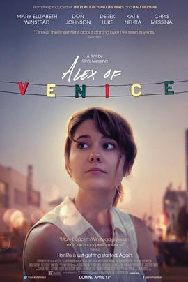

威尼斯的阿历克斯 / Alex of Venice
马克一波在LA看到的Venice！！ （坐标 1599 Pacific Ave, Venice, CA 90291, USA）
作品信息
| 导演 | 克里斯·梅西纳 |
| 编剧 | 杰西卡·戈德堡 / Katie Nehra |
| 主演 | 玛丽·伊丽莎白·温斯特德 / 克里斯·梅西纳 / 唐·约翰逊 / 德里克·卢克 / katie nehra / 贝丝·格兰特 / 迈克尔·切鲁斯 |
| 类型 | 剧情 |
| 制片国家/地区 | 美国 |
| 语言 | 英语 |
| 上映日期 | 2014-04-18(美国) |
| 片长 | 86分钟 |
| IMDb | tt2977090 |
说过什么
2022-12-10 18:55:02
广播 · 想看
马克一波在LA看到的Venice！！ （坐标 1599 Pacific Ave, Venice, CA 90291, USA）
最后一次看到是 2026-08-01T11:08:16+10:00 · 豆瓣原页